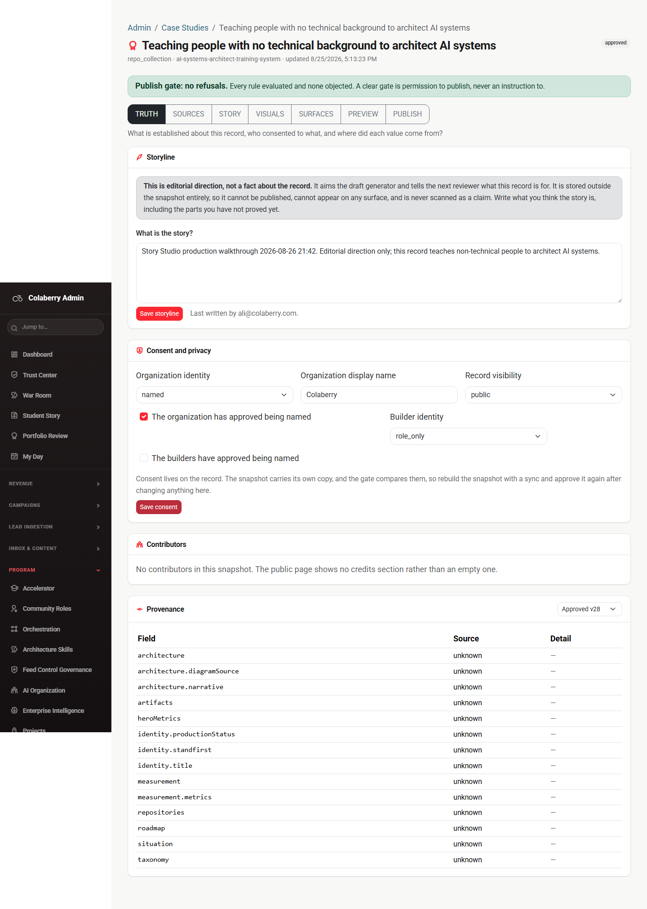
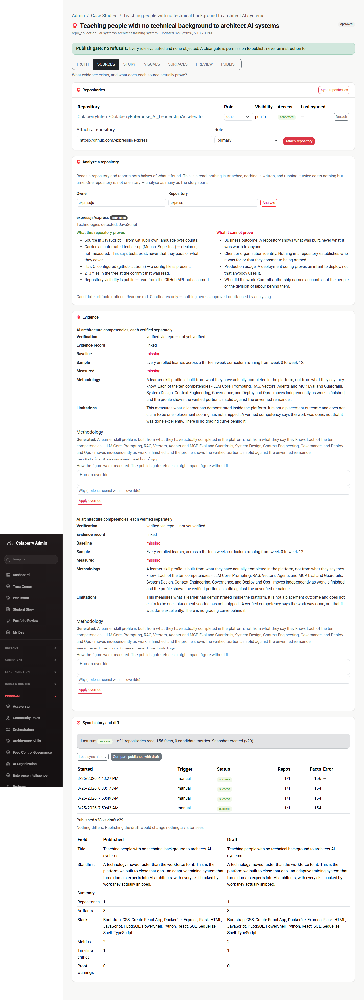
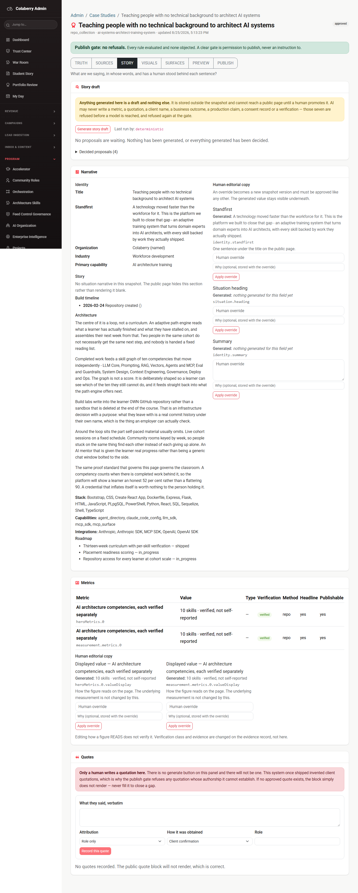
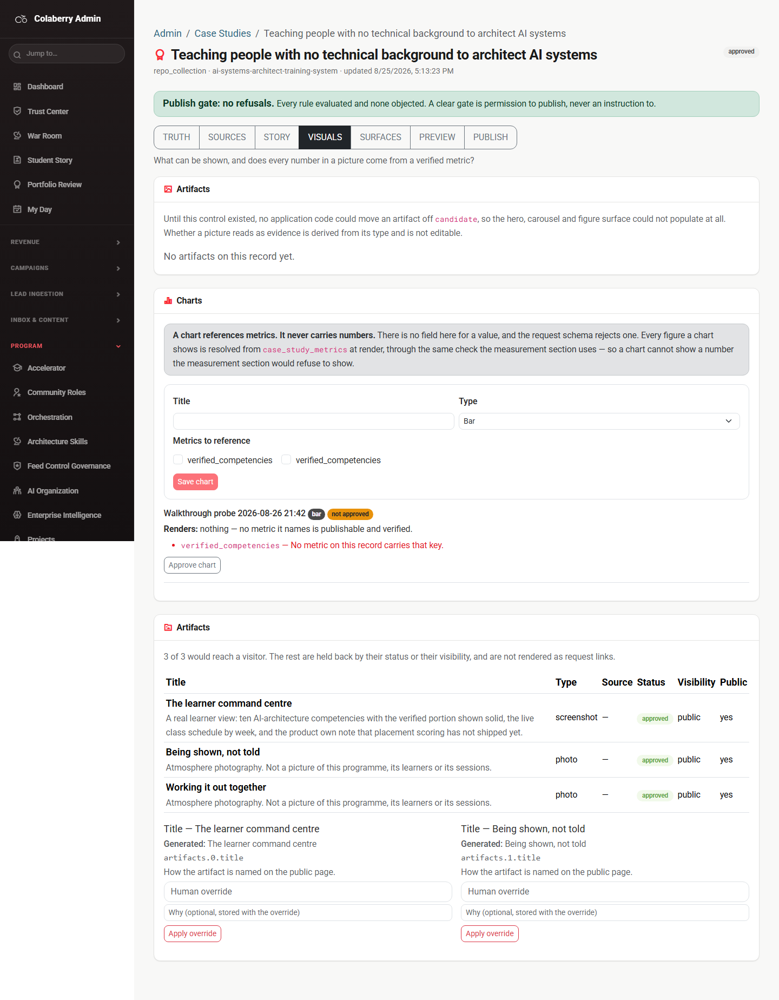
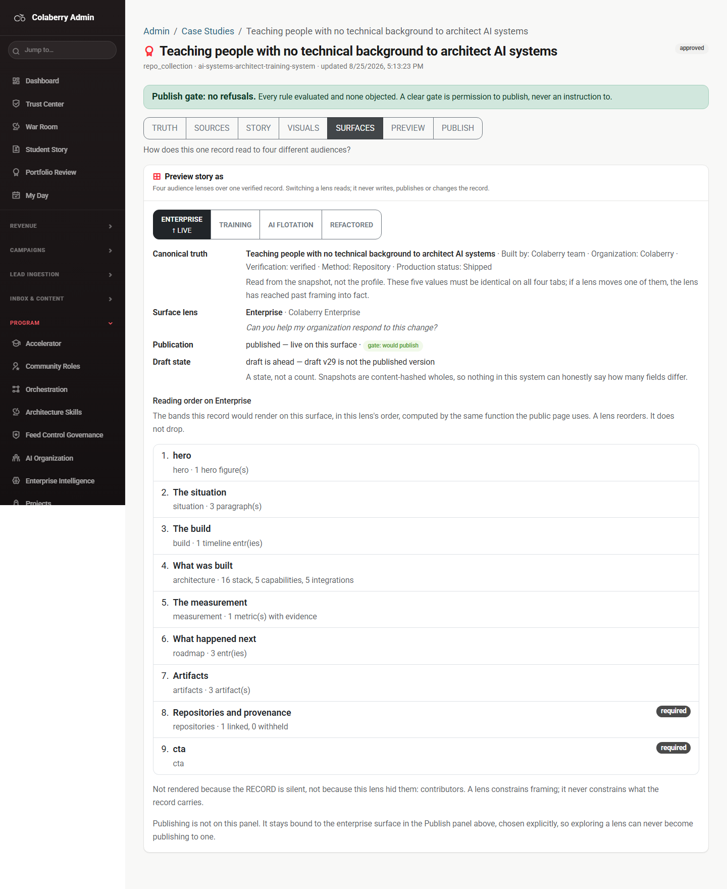
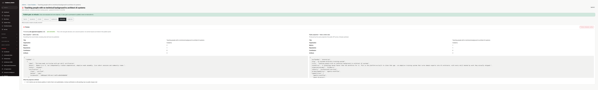
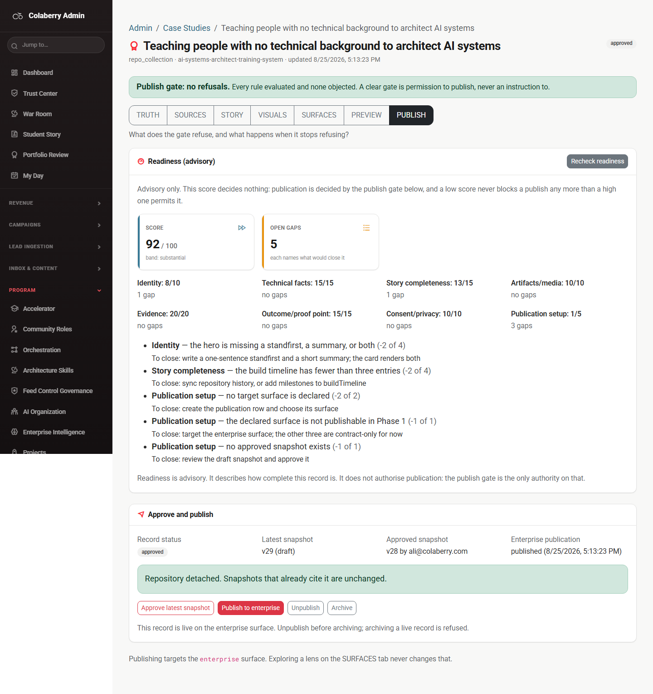
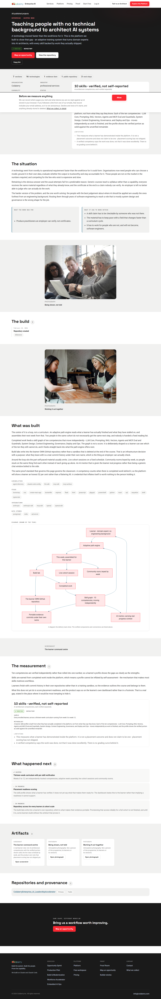

“What is established about this record, who consented to what, and where did each value come from?”
The canonical record and its consent axis. Four panels: the Storyline (editorial direction that aims the draft generator), Consent and privacy, Contributors, and Provenance.
GET /storyline
returned the same text. The disclaimer that this is editorial direction stored outside
the snapshot is on screen, which is the right thing to say.named / Colaberry / public /
role_only) and the save was accepted. Re-saving the same values left the
record unchanged, confirmed through the API.CaseStudyPublishPanel, which only reaches the screen on the PUBLISH tab.
An operator whose consent save fails on this tab sees nothing happen.unknown / —. Fourteen rows, all
blank, on the panel whose entire job is answering where each value came from. The
payload behind them carried the tier, the actor, the note, the repository and the
commit sha for every single row. The reader was looking for
source/sourceRef, keys the server does not send.
01-truth.png — note the Provenance table: fourteen rows, Source “unknown”, Detail “—”. That is the defect, photographed.
“What evidence exists, and what does each source actually prove?”
Everything the record is built from: attached repositories and their roles, the read-only repository analyzer, the evidence table, sync, sync history, and the published-vs-draft diff.
connected, listing both
what the repository proves and what it cannot prove. Seven proof elements rendered.data-testid="cs-analyze-repo". Every lookup resolves
the first match, which is the input — so the capability guard for “analyze
repository” was asserting against a text box and would have stayed green with the
button deleted. The walkthrough had to find the button by its accessible name instead,
which is how it was noticed.“Attach repository” is styled btn-danger — solid red —
for an additive, reversible action, and “Sync repositories” is
btn-outline-danger. Red on this surface currently means “a button”
rather than “careful”, which spends the one signal that should be reserved for
Detach and Archive. Not fixed here: it is a design decision across the whole admin surface,
not a defect in this tab.

02-sources.png — captured after the sync, the analyzer run and the diff, so the panels show real returned data.
“What are we saying, in whose words, and has a human stood behind each sentence?”
The prose and the figures it is allowed to state: draft generation and promotion, the narrative override fields, the metric table, and quotes.

03-story.png — captured with four generated drafts on screen, before they were rejected.
“What can be shown, and does every number in a picture come from a verified metric?”
Artifact promotion — the control that moves a picture off candidate so a
hero, carousel or figure can populate — and charts that reference verified
metrics without ever carrying a number of their own.
case_study_artifacts, and the panel says “No artifacts on this
record yet.” rather than rendering a blank table.resolveChart resolves
against the case_study_metrics table, which has zero rows for this record.
So the form invites you to build a chart, accepts it, and then renders nothing.
Left open — closing it needs a metric-listing endpoint the admin API does
not have.verified_competencies appears in
both heroMetrics and measurement.metrics, so two checkboxes
rendered carrying one id and one test id — both labels pointed at
the first input, and clicking the second label toggled the wrong box. Fixed.Hero selection, the promote control and the derived evidence/atmosphere column. All three are per-artifact, and this record has no artifacts, so there was no row to press. They are unproven end to end — not observed working, and not observed broken.
The architecture diagram is not on this tab. It is rendered by the public story page
(StoryDiagram.tsx, mermaid loaded from a CDN at runtime), and nothing in the
admin VISUALS tab previews it. It was checked separately against the public page — see
stop 7.

04-visuals.png
“How does this one record read to four different audiences?”
↑ LIVE), not by colour alone.This tab reported gate: would publish while the PUBLISH tab reported five
readiness gaps, two of them publication.surface_declared and
publication.surface_publishable. Both are correct and they are answering different
questions — readiness is advisory and scores the record, the gate decides publication
— but a reader moving between the two tabs sees “would publish” and
“five gaps” within one click of each other with nothing on screen reconciling them.
Not a defect. Recorded because it is the most likely thing to be misread on this surface.

05-surfaces.png — the Enterprise lens, auto-loaded, with the LIVE marker and the band order beneath it.
“What would a reader actually receive?”
documentElement.scrollWidth went from 1440 on every other tab to
7745 against a 1440px viewport the moment the projection rendered. The JSON
<pre> grew to 3,686px inside a column whose min-width
is auto, dragging the whole admin shell sideways with it.
overflow: auto was already set and did not prevent it — a box has to
be stopped from widening before it can be asked to scroll. Fixed, and
the fix was verified by injecting exactly those two declarations into the live page and
re-measuring: 7745 → 1440.
06-preview.png — this is the overflow itself. The capture is 7745px of real page width downscaled to 1800px, which is why the content sits in a narrow strip on the left with thousands of empty pixels beside it.
“What does the gate refuse, and what happens when it stops refusing?”
published (8/25/2026, 5:13:23 PM).Approve, publish, unpublish and archive were not pressed on the pilot. It is live on the Enterprise surface and unpublishing or archiving it would have taken a real page down. The refusal path was exercised on a throwaway record instead — see below.

07-publish.png
case_study_not_approved, snapshot_not_approved) and the panel
rendered both in full with field and remedy. This is the behaviour the whole gate design
exists for, and it is real.archived from the server, so
the desk was left with no debris.this override not found., on a different tab. The panel had already
worked out the right answer and then did not act on it. Fixed.Approve was correctly disabled on that record, because there
was no snapshot to approve. That is right, and it is only discoverable from a
title tooltip.
| # | Where | What is wrong | State |
|---|---|---|---|
| 1 | TRUTH | Provenance rendered fourteen rows all reading unknown / —.
The reader looked for source/sourceRef; the server sends
tier/origin/recordedAt. The test fixture
encoded the same obsolete shape, which is why the suite never noticed. |
Fixed |
| 2 | Every tab | The outcome of every write — consent, sync, attach, detach, role change, every override — rendered only inside the PUBLISH panel. A failed consent save on TRUTH produced no visible response of any kind. | Fixed |
| 3 | PREVIEW | The projection JSON pushed the page to 7745px against a 1440px viewport — a 6,305px horizontal overflow affecting the whole admin shell. | Fixed |
| 4 | STORY | The Narrative panel offered three enabled Apply-override buttons on a record it had just said has no snapshot. Pressing one 404s. | Fixed |
| 5 | SOURCES | The Repository input and the Analyze button both carried
data-testid="cs-analyze-repo", so the capability guard was asserting
against a text box. |
Fixed |
| 6 | VISUALS | Duplicate metric key offered twice (two inputs, one id) — fixed. The
deeper half is not: the builder’s keys come from the snapshot while the
resolver reads case_study_metrics, so on this record every offered key
resolves to nothing. Closing that needs a metric-listing endpoint the admin API does
not have, so it is left open deliberately. |
Half open |
Console errors: none. Across all seven tabs,
the record load and the public page, the browser logged zero page errors, zero console errors,
zero warnings, zero failed requests and zero 4xx or 5xx responses. The only error of the entire
run was the single 404 POST …/overrides produced by defect 4 on the
throwaway record.
This is the section to read before deciding what Story Studio can be used for. Everything below was observed, not inferred from a roadmap.
deterministic”. It is behind a seam, so a
model can be dropped in later, but today nothing generates prose that a model wrote.
Drafts are assembled from repository facts.CASE_STUDY_SURFACE_LAB_USER_IDS is unset on the production backend, which
means off. The lab renders and the Enterprise lens loads (HTTP 200), but
Training and AI Flotation return 403 for every admin — and three of the four
surfaces are publishable: false anyway. Nothing in this walkthrough changed
that environment variable, and nothing should: it is a production config decision, not a
bug to work around.case_study_metrics is empty for the only record that exists. The chart
subsystem is currently a form with an honest error message behind it./stories/:slug. The Story Studio never shows it.The published page at /stories/ai-systems-architect-training-system rendered
with the record’s headline and, unlike the admin VISUALS tab, a real mermaid
architecture diagram — one <svg>, rendered, no placeholder and no
failure state.

08-public-story.png — the diagram the VISUALS tab governs but never shows.
Stated in full, because a walkthrough that writes to a live record and does not say so is not a walkthrough.
Never touched: the pilot was not approved, published, unpublished, archived or overridden. Its publication has been continuously live throughout.